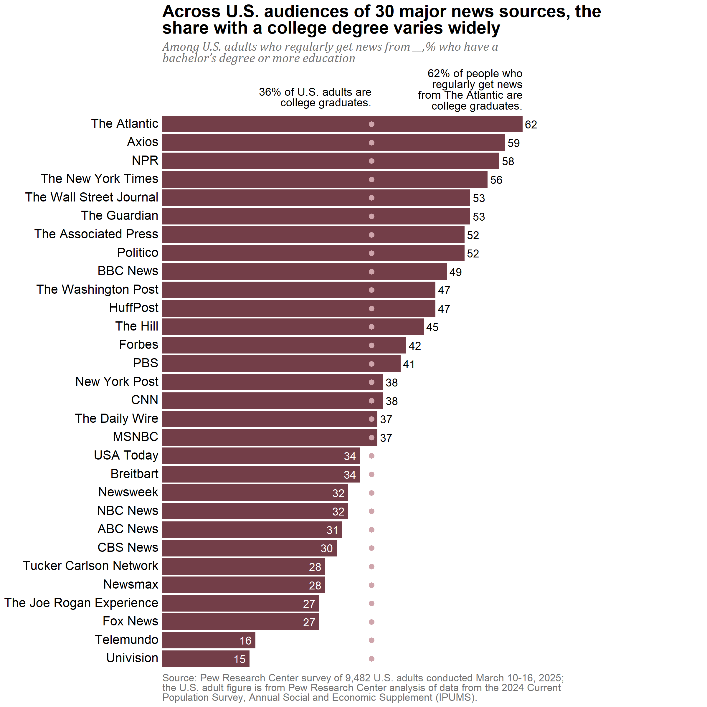

Let’s ask ClaudeAI to help us with identifying data stored in a string
Published
September 12, 2025
Pew’s research into the level of higher education among the different audiences of 30 major media outlets includes an interesting bar plot that I would like to reproduce.
It is a vertical bar plot with 30 discrete media outlets on the y-axis ordered by their proportion of audience that has obtained a bachelor’s degree or even more education.
This is an interesting plot to reproduce because it expresses themes of meritocracy and how there can be hierarchies within many areas of life, such as media consumption, extracted and laid out for us to see where we may fall. It is definitely an interesting choice for the researchers at Pew not to ask the survey participants if they also get their news from TikTok (either from these very media outlets’ own accounts or from independent journalists reporting stories on the app).
This plot feels very similar to the kinds of plots Pew usually produces, so I hope you find my post here informative for how we can take the data they provide us and turn it into this plot.
Package Libraries
Much like the CalFire situation where their data is stored in a PDF file, Pew let’s you also view a PDF file that organizes the data in a tidy format for plotting. This is nice for us because aside from bring this data in, we won’t have to change anything beyond how it looks already.
We want tidyverse and extrafont (as per usual) and ggtext (a helper package on top of ggplot2).
Assist from ClaudeAI
I decided to enlist the help from Claude to take the string of text in the pdf to become a tidy data frame (aka “tibble”) that can be used directly to plot.
Prompt 1 essentially takes the string I copied that includes all the relevant data and use its knowledge of R code to create a script that manually creates a tibble. Prompt 2 takes the same string but uses the stringr library within tidyverse to build out a process that parses the string itself and creates the same data frame result.
The string I used is thus:
“Education levels of U.S. audiences for 30 major news sources Among U.S. adults who regularly get news from ___, % with each level of education College+ Some college High school or less The Atlantic 62% 23% 14% Axios 59 21 19 NPR 58 27 14 The New York Times 56 24 19 The Guardian 53 28 18 The Wall Street Journal 53 26 21 Politico 52 27 20 The Associated Press 52 28 20 BBC News 49 27 23 The Washington Post 47 30 22 HuffPost 47 28 25 The Hill 45 25 29 Forbes 42 30 28 PBS 41 29 30 CNN 38 28 33 New York Post 38 33 29 The Daily Wire 37 37 26 MSNBC 37 30 33 USA Today 34 30 36 Breitbart 34 32 34 Newsweek 32 32 35 NBC News 32 29 39 ABC News 31 30 39 CBS News 30 30 40 Tucker Carlson Network 28 33 40 Newsmax 28 35 37 Fox News 27 30 42 The Joe Rogan Experience 27 35 38 Telemundo 16 26 56 Univision 15 26 57”
Prompt 1 Code
Code
# method 1 from Claude ----# LLM to parse the text and use its knowledge of R code to output the following:library(dplyr)library(tibble)# Create tibble from the news sources education datanews_education <-tribble(~news_source, ~college_plus, ~some_college, ~high_school_or_less,"The Atlantic", 62, 23, 14,"Axios", 59, 21, 19,"NPR", 58, 27, 14,"The New York Times", 56, 24, 19,"The Guardian", 53, 28, 18,"The Wall Street Journal", 53, 26, 21,"Politico", 52, 27, 20,"The Associated Press", 52, 28, 20,"BBC News", 49, 27, 23,"The Washington Post", 47, 30, 22,"HuffPost", 47, 28, 25,"The Hill", 45, 25, 29,"Forbes", 42, 30, 28,"PBS", 41, 29, 30,"CNN", 38, 28, 33,"New York Post", 38, 33, 29,"The Daily Wire", 37, 37, 26,"MSNBC", 37, 30, 33,"USA Today", 34, 30, 36,"Breitbart", 34, 32, 34,"Newsweek", 32, 32, 35,"NBC News", 32, 29, 39,"ABC News", 31, 30, 39,"CBS News", 30, 30, 40,"Tucker Carlson Network", 28, 33, 40,"Newsmax", 28, 35, 37,"Fox News", 27, 30, 42,"The Joe Rogan Experience", 27, 35, 38,"Telemundo", 16, 26, 56,"Univision", 15, 26, 57)# Display the tibbleprint(news_education)
# A tibble: 30 × 4
news_source college_plus some_college high_school_or_less
<chr> <dbl> <dbl> <dbl>
1 The Atlantic 62 23 14
2 Axios 59 21 19
3 NPR 58 27 14
4 The New York Times 56 24 19
5 The Guardian 53 28 18
6 The Wall Street Journal 53 26 21
7 Politico 52 27 20
8 The Associated Press 52 28 20
9 BBC News 49 27 23
10 The Washington Post 47 30 22
# ℹ 20 more rows
Code
# Optional: View structure and summaryglimpse(news_education)
news_source college_plus some_college high_school_or_less
Length:30 Min. :15.00 Min. :21.00 Min. :14.00
Class :character 1st Qu.:31.25 1st Qu.:27.00 1st Qu.:21.25
Mode :character Median :38.00 Median :29.00 Median :29.50
Mean :40.00 Mean :28.97 Mean :30.53
3rd Qu.:51.25 3rd Qu.:30.00 3rd Qu.:37.75
Max. :62.00 Max. :37.00 Max. :57.00
Code
# Optional: Sort by college+ percentage (descending)news_education_sorted <- news_education %>%arrange(desc(college_plus))print("Sorted by College+ percentage:")
[1] "Sorted by College+ percentage:"
Code
print(news_education_sorted)
# A tibble: 30 × 4
news_source college_plus some_college high_school_or_less
<chr> <dbl> <dbl> <dbl>
1 The Atlantic 62 23 14
2 Axios 59 21 19
3 NPR 58 27 14
4 The New York Times 56 24 19
5 The Guardian 53 28 18
6 The Wall Street Journal 53 26 21
7 Politico 52 27 20
8 The Associated Press 52 28 20
9 BBC News 49 27 23
10 The Washington Post 47 30 22
# ℹ 20 more rows
Code
# # This R code uses dplyr and tibble to create a clean dataset from your PDF text. Here's what the code does:# # Creates the tibble: Uses tribble() (transpose tibble) to easily input the data in a readable row-by-row format# Column names: Uses snake_case naming convention for the education levels# Data validation: Includes glimpse() and summary() to check the structure# Bonus sorting: Shows how to sort by college education percentage# # The tibble will have 30 rows (one for each news source) and 4 columns:# # news_source: Character column with the news outlet names# college_plus: Numeric column with percentage having college+ education# some_college: Numeric column with percentage having some college# high_school_or_less: Numeric column with percentage having high school or less# # You can run additional dplyr operations on this tibble like filtering, grouping, or creating new calculated columns as needed for your analysis.RetryClaude can make mistakes. Please double-check responses. Sonnet 4#
This output simply reads the string and uses the tibble() function to manually declare a data frame from scratch.
Prompt 2 Code
Code
# method 2 ----# Take the same text but use its knowledge of R to write a script that parses the string # and creates the same tibble result as the 1st methodlibrary(dplyr)library(tidyr)library(stringr)library(tibble)# Raw text from PDFraw_text <-"Education levels of U.S. audiences for 30 major news sources Among U.S. adults who regularly get news from ___, % with each level of education College+ Some college High school or less The Atlantic 62% 23% 14% Axios 59 21 19 NPR 58 27 14 The New York Times 56 24 19 The Guardian 53 28 18 The Wall Street Journal 53 26 21 Politico 52 27 20 The Associated Press 52 28 20 BBC News 49 27 23 The Washington Post 47 30 22 HuffPost 47 28 25 The Hill 45 25 29 Forbes 42 30 28 PBS 41 29 30 CNN 38 28 33 New York Post 38 33 29 The Daily Wire 37 37 26 MSNBC 37 30 33 USA Today 34 30 36 Breitbart 34 32 34 Newsweek 32 32 35 NBC News 32 29 39 ABC News 31 30 39 CBS News 30 30 40 Tucker Carlson Network 28 33 40 Newsmax 28 35 37 Fox News 27 30 42 The Joe Rogan Experience 27 35 38 Telemundo 16 26 56 Univision 15 26 57"# Parse the text to create tibblenews_education <- raw_text %>%# Split into lines and convert to tibblestr_split("(?=The Atlantic|Axios|NPR|The New York Times|The Guardian|The Wall Street Journal|Politico|The Associated Press|BBC News|The Washington Post|HuffPost|The Hill|Forbes|PBS|CNN|New York Post|The Daily Wire|MSNBC|USA Today|Breitbart|Newsweek|NBC News|ABC News|CBS News|Tucker Carlson Network|Newsmax|Fox News|The Joe Rogan Experience|Telemundo|Univision)") %>%unlist() %>%# Keep only the lines with actual data (remove header) .[str_detect(., "The Atlantic|Axios|NPR|The New York Times|The Guardian|The Wall Street Journal|Politico|The Associated Press|BBC News|The Washington Post|HuffPost|The Hill|Forbes|PBS|CNN|New York Post|The Daily Wire|MSNBC|USA Today|Breitbart|Newsweek|NBC News|ABC News|CBS News|Tucker Carlson Network|Newsmax|Fox News|The Joe Rogan Experience|Telemundo|Univision")] %>%# Convert to tibbletibble(raw_line = .) %>%# Extract news source names and percentages using regexmutate(# Extract news source (everything before the first number)news_source =str_extract(raw_line, "^[A-Za-z\\s]+(?=\\s+\\d)"),# Clean up news source namesnews_source =str_trim(news_source),# Extract all percentages (with or without % sign)percentages =str_extract_all(raw_line, "\\d+%?") ) %>%# Unnest the percentages and convert to numericunnest(percentages) %>%# Remove % sign and convert to numericmutate(percentages =as.numeric(str_remove(percentages, "%")) ) %>%# Group by news source and create columns for each education levelgroup_by(news_source) %>%mutate(education_level =case_when(row_number() ==1~"college_plus",row_number() ==2~"some_college", row_number() ==3~"high_school_or_less",TRUE~NA_character_ ) ) %>%# Pivot to wide formatpivot_wider(names_from = education_level,values_from = percentages ) %>%# Clean up and select final columnsselect(news_source, college_plus, some_college, high_school_or_less) %>%ungroup()# Display the resultprint(news_education)
# A tibble: 30 × 4
news_source college_plus some_college high_school_or_less
<chr> <dbl> <dbl> <dbl>
1 The Atlantic 62 23 14
2 Axios 59 21 19
3 NPR 58 27 14
4 The New York Times 56 24 19
5 The Guardian 53 28 18
6 The Wall Street Journal 53 26 21
7 Politico 52 27 20
8 The Associated Press 52 28 20
9 BBC News 49 27 23
10 The Washington Post 47 30 22
# ℹ 20 more rows
# Check that percentages add up to ~100% for each sourcenews_education %>%mutate(total = college_plus + some_college + high_school_or_less) %>%select(news_source, total) %>%print()
# A tibble: 30 × 2
news_source total
<chr> <dbl>
1 The Atlantic 99
2 Axios 99
3 NPR 99
4 The New York Times 99
5 The Guardian 99
6 The Wall Street Journal 100
7 Politico 99
8 The Associated Press 100
9 BBC News 99
10 The Washington Post 99
# ℹ 20 more rows
Code
# Sort by college+ percentage (descending)news_education_sorted <- news_education %>%arrange(desc(college_plus))print("Sorted by College+ percentage:")
[1] "Sorted by College+ percentage:"
Code
print(news_education_sorted)
# A tibble: 30 × 4
news_source college_plus some_college high_school_or_less
<chr> <dbl> <dbl> <dbl>
1 The Atlantic 62 23 14
2 Axios 59 21 19
3 NPR 58 27 14
4 The New York Times 56 24 19
5 The Guardian 53 28 18
6 The Wall Street Journal 53 26 21
7 Politico 52 27 20
8 The Associated Press 52 28 20
9 BBC News 49 27 23
10 The Washington Post 47 30 22
# ℹ 20 more rows
This code goes a little deeper in terms of outlining a whole processing starting with a string and ending up with the same data frame we wrote in Prompt 1. The actual regex (regular expression) code is actually very light; it’s the processing that follows that requires a bit of grouping, aggregating and pivoting.
Plotting
I did ask Claude for some help here and there to get things as close as possible to what Pew published. But I did make some creative decisions and not extend myself too much just to get the justifications and spacing exactly right.
I’m not so sure if the names of the colors Pew used are actually vintage merlot and lady flower, but what do you guys think?
Code
df <- news_education_sortedvintage_merlot <-"#733e48"lady_flower <-"#cfa5ac"df |>ggplot(aes(x = college_plus,y =reorder(news_source, college_plus))) +geom_col(fill = vintage_merlot) +geom_point(aes(x =36, y = news_source),show.legend =FALSE,color = lady_flower,size =3) +geom_text(aes(label = college_plus),hjust =ifelse(df$college_plus >34,-.21, 1.3),color =ifelse(df$college_plus >34, "black", "white") ) +annotate("text",y =nrow(df) +1.77,x =36,label ="36% of U.S. adults are\ncollege graduates.",lineheight = .8,hjust =1,vjust =1,size =4 ) +annotate("text",y =nrow(df) +1.77,x =62,label ="62% of people who\nregularly get news\nfrom The Atlantic are\ncollege graduates.",lineheight = .8,hjust =1,vjust =1,size =4 ) +labs(title ="Across U.S. audiences of 30 major news sources, the<br>share with a college degree varies widely",subtitle ="Among U.S. adults who regularly get news from __,% who have a <br>bachelor's degree or more education",caption ="Source: Pew Research Center survey of 9,482 U.S. adults conducted March 10-16, 2025;<br>the U.S. adult figure is from Pew Research Center analysis of data from the 2024 Current<br>Population Survey, Annual Social and Economic Supplement (IPUMS).") +scale_y_discrete(expand =expansion(mult =c(0.01, 0.18))) +scale_x_continuous(expand =expansion(mult =c(0, 0.5))) +theme_minimal() +theme(panel.grid =element_blank(),axis.title =element_blank(),axis.text.x =element_blank(),axis.text =element_markdown(color ="black",family ="Arial",size =rel(1.5)),plot.title =element_markdown(hjust =0, face ="bold"),plot.subtitle =element_markdown(hjust =0, size =11, color ="grey60", face ="italic", family ="Cambria"),plot.caption =element_markdown(color ="grey60",) )

I’m happy as to how this turned out. The next step is to find the raw survey data Pew collected and use that as the starting point rather than the PDF they provided 👀
Source Code
---title: "Reproducing Pew Research's 'How the audiences of 30 major news sources differ in their levels of education'"toc: truedate: "2025-09-12"description: "Let's ask ClaudeAI to help us with identifying data stored in a string"categories: [media,education,survey,meritocracy]image: "images/pew_original.png"format: html: code-fold: true code-tools: trueexecute: warning: false message: false---Pew's research into the level of higher education among the different audiences of 30 major media outlets includes an interesting bar plot that I would like to reproduce.The article I'm referencing can be found [here](https://www.pewresearch.org/short-reads/2025/08/18/how-the-audiences-of-30-major-news-sources-differ-in-their-levels-of-education/).It is a vertical bar plot with 30 discrete media outlets on the y-axis ordered by their proportion of audience that has obtained a bachelor's degree or even more education.This is an interesting plot to reproduce because it expresses themes of meritocracy and how there can be hierarchies within many areas of life, such as media consumption, extracted and laid out for us to see where we *may* fall. It is definitely an interesting choice for the researchers at Pew not to ask the survey participants if they also get their news from TikTok (either from these very media outlets' own accounts or from independent journalists reporting stories on the app).This plot feels very similar to the kinds of plots Pew usually produces, so I hope you find my post here informative for how we can take the data they provide us and turn it into this plot.# Package LibrariesMuch like the [CalFire](https://solplots.com/demos/CalFires.html) situation where their data is stored in a PDF file, Pew let's you also view a [PDF](https://www.pewresearch.org/wp-content/uploads/sites/20/2025/08/SR_25.08.18_media-brands-edu_detailed-table.pdf) file that organizes the data in a tidy format for plotting. This is nice for us because aside from bring this data in, we won't have to change anything beyond how it looks already.We want tidyverse and extrafont (as per usual) and [ggtext](https://github.com/wilkelab/ggtext) (a helper package on top of ggplot2).```{r}#| echo: false#| message: falselibrary(tidyverse)library(extrafont)library(ggtext)```# Assist from ClaudeAII decided to enlist the help from Claude to take the string of text in the pdf to become a tidy data frame (aka "tibble") that can be used directly to plot.Prompt 1 essentially takes the string I copied that includes all the relevant data and use its knowledge of R code to create a script that manually creates a tibble. Prompt 2 takes the same string but uses the stringr library within tidyverse to build out a process that parses the string itself and creates the same data frame result.The string I used is thus:"Education levels of U.S. audiences for 30 major news sources Among U.S. adults who regularly get news from \_\_\_, % with each level of education College+ Some college High school or less The Atlantic 62% 23% 14% Axios 59 21 19 NPR 58 27 14 The New York Times 56 24 19 The Guardian 53 28 18 The Wall Street Journal 53 26 21 Politico 52 27 20 The Associated Press 52 28 20 BBC News 49 27 23 The Washington Post 47 30 22 HuffPost 47 28 25 The Hill 45 25 29 Forbes 42 30 28 PBS 41 29 30 CNN 38 28 33 New York Post 38 33 29 The Daily Wire 37 37 26 MSNBC 37 30 33 USA Today 34 30 36 Breitbart 34 32 34 Newsweek 32 32 35 NBC News 32 29 39 ABC News 31 30 39 CBS News 30 30 40 Tucker Carlson Network 28 33 40 Newsmax 28 35 37 Fox News 27 30 42 The Joe Rogan Experience 27 35 38 Telemundo 16 26 56 Univision 15 26 57"### Prompt 1 Code```{r}# method 1 from Claude ----# LLM to parse the text and use its knowledge of R code to output the following:library(dplyr)library(tibble)# Create tibble from the news sources education datanews_education <-tribble(~news_source, ~college_plus, ~some_college, ~high_school_or_less,"The Atlantic", 62, 23, 14,"Axios", 59, 21, 19,"NPR", 58, 27, 14,"The New York Times", 56, 24, 19,"The Guardian", 53, 28, 18,"The Wall Street Journal", 53, 26, 21,"Politico", 52, 27, 20,"The Associated Press", 52, 28, 20,"BBC News", 49, 27, 23,"The Washington Post", 47, 30, 22,"HuffPost", 47, 28, 25,"The Hill", 45, 25, 29,"Forbes", 42, 30, 28,"PBS", 41, 29, 30,"CNN", 38, 28, 33,"New York Post", 38, 33, 29,"The Daily Wire", 37, 37, 26,"MSNBC", 37, 30, 33,"USA Today", 34, 30, 36,"Breitbart", 34, 32, 34,"Newsweek", 32, 32, 35,"NBC News", 32, 29, 39,"ABC News", 31, 30, 39,"CBS News", 30, 30, 40,"Tucker Carlson Network", 28, 33, 40,"Newsmax", 28, 35, 37,"Fox News", 27, 30, 42,"The Joe Rogan Experience", 27, 35, 38,"Telemundo", 16, 26, 56,"Univision", 15, 26, 57)# Display the tibbleprint(news_education)# Optional: View structure and summaryglimpse(news_education)summary(news_education)# Optional: Sort by college+ percentage (descending)news_education_sorted <- news_education %>%arrange(desc(college_plus))print("Sorted by College+ percentage:")print(news_education_sorted)# # This R code uses dplyr and tibble to create a clean dataset from your PDF text. Here's what the code does:# # Creates the tibble: Uses tribble() (transpose tibble) to easily input the data in a readable row-by-row format# Column names: Uses snake_case naming convention for the education levels# Data validation: Includes glimpse() and summary() to check the structure# Bonus sorting: Shows how to sort by college education percentage# # The tibble will have 30 rows (one for each news source) and 4 columns:# # news_source: Character column with the news outlet names# college_plus: Numeric column with percentage having college+ education# some_college: Numeric column with percentage having some college# high_school_or_less: Numeric column with percentage having high school or less# # You can run additional dplyr operations on this tibble like filtering, grouping, or creating new calculated columns as needed for your analysis.RetryClaude can make mistakes. Please double-check responses. Sonnet 4# ```This output simply reads the string and uses the `tibble()` function to manually declare a data frame from scratch.### Prompt 2 Code```{r}# method 2 ----# Take the same text but use its knowledge of R to write a script that parses the string # and creates the same tibble result as the 1st methodlibrary(dplyr)library(tidyr)library(stringr)library(tibble)# Raw text from PDFraw_text <-"Education levels of U.S. audiences for 30 major news sources Among U.S. adults who regularly get news from ___, % with each level of education College+ Some college High school or less The Atlantic 62% 23% 14% Axios 59 21 19 NPR 58 27 14 The New York Times 56 24 19 The Guardian 53 28 18 The Wall Street Journal 53 26 21 Politico 52 27 20 The Associated Press 52 28 20 BBC News 49 27 23 The Washington Post 47 30 22 HuffPost 47 28 25 The Hill 45 25 29 Forbes 42 30 28 PBS 41 29 30 CNN 38 28 33 New York Post 38 33 29 The Daily Wire 37 37 26 MSNBC 37 30 33 USA Today 34 30 36 Breitbart 34 32 34 Newsweek 32 32 35 NBC News 32 29 39 ABC News 31 30 39 CBS News 30 30 40 Tucker Carlson Network 28 33 40 Newsmax 28 35 37 Fox News 27 30 42 The Joe Rogan Experience 27 35 38 Telemundo 16 26 56 Univision 15 26 57"# Parse the text to create tibblenews_education <- raw_text %>%# Split into lines and convert to tibblestr_split("(?=The Atlantic|Axios|NPR|The New York Times|The Guardian|The Wall Street Journal|Politico|The Associated Press|BBC News|The Washington Post|HuffPost|The Hill|Forbes|PBS|CNN|New York Post|The Daily Wire|MSNBC|USA Today|Breitbart|Newsweek|NBC News|ABC News|CBS News|Tucker Carlson Network|Newsmax|Fox News|The Joe Rogan Experience|Telemundo|Univision)") %>%unlist() %>%# Keep only the lines with actual data (remove header) .[str_detect(., "The Atlantic|Axios|NPR|The New York Times|The Guardian|The Wall Street Journal|Politico|The Associated Press|BBC News|The Washington Post|HuffPost|The Hill|Forbes|PBS|CNN|New York Post|The Daily Wire|MSNBC|USA Today|Breitbart|Newsweek|NBC News|ABC News|CBS News|Tucker Carlson Network|Newsmax|Fox News|The Joe Rogan Experience|Telemundo|Univision")] %>%# Convert to tibbletibble(raw_line = .) %>%# Extract news source names and percentages using regexmutate(# Extract news source (everything before the first number)news_source =str_extract(raw_line, "^[A-Za-z\\s]+(?=\\s+\\d)"),# Clean up news source namesnews_source =str_trim(news_source),# Extract all percentages (with or without % sign)percentages =str_extract_all(raw_line, "\\d+%?") ) %>%# Unnest the percentages and convert to numericunnest(percentages) %>%# Remove % sign and convert to numericmutate(percentages =as.numeric(str_remove(percentages, "%")) ) %>%# Group by news source and create columns for each education levelgroup_by(news_source) %>%mutate(education_level =case_when(row_number() ==1~"college_plus",row_number() ==2~"some_college", row_number() ==3~"high_school_or_less",TRUE~NA_character_ ) ) %>%# Pivot to wide formatpivot_wider(names_from = education_level,values_from = percentages ) %>%# Clean up and select final columnsselect(news_source, college_plus, some_college, high_school_or_less) %>%ungroup()# Display the resultprint(news_education)# Verify the structureglimpse(news_education)# Check that percentages add up to ~100% for each sourcenews_education %>%mutate(total = college_plus + some_college + high_school_or_less) %>%select(news_source, total) %>%print()# Sort by college+ percentage (descending)news_education_sorted <- news_education %>%arrange(desc(college_plus))print("Sorted by College+ percentage:")print(news_education_sorted)```This code goes a little deeper in terms of outlining a whole processing starting with a string and ending up with the same data frame we wrote in Prompt 1. The actual regex (regular expression) code is actually very light; it's the processing that follows that requires a bit of grouping, aggregating and pivoting.# PlottingI did ask Claude for some help here and there to get things as close as possible to what Pew published. But I did make some creative decisions and not extend myself too much just to get the justifications and spacing exactly right.I'm not so sure if the names of the colors Pew used are actually vintage merlot and lady flower, but what do you guys think?```{r}#| fig-width: 12.5#| fig-height: 12.5df <- news_education_sortedvintage_merlot <-"#733e48"lady_flower <-"#cfa5ac"df |>ggplot(aes(x = college_plus,y =reorder(news_source, college_plus))) +geom_col(fill = vintage_merlot) +geom_point(aes(x =36, y = news_source),show.legend =FALSE,color = lady_flower,size =3) +geom_text(aes(label = college_plus),hjust =ifelse(df$college_plus >34,-.21, 1.3),color =ifelse(df$college_plus >34, "black", "white") ) +annotate("text",y =nrow(df) +1.77,x =36,label ="36% of U.S. adults are\ncollege graduates.",lineheight = .8,hjust =1,vjust =1,size =4 ) +annotate("text",y =nrow(df) +1.77,x =62,label ="62% of people who\nregularly get news\nfrom The Atlantic are\ncollege graduates.",lineheight = .8,hjust =1,vjust =1,size =4 ) +labs(title ="Across U.S. audiences of 30 major news sources, the<br>share with a college degree varies widely",subtitle ="Among U.S. adults who regularly get news from __,% who have a <br>bachelor's degree or more education",caption ="Source: Pew Research Center survey of 9,482 U.S. adults conducted March 10-16, 2025;<br>the U.S. adult figure is from Pew Research Center analysis of data from the 2024 Current<br>Population Survey, Annual Social and Economic Supplement (IPUMS).") +scale_y_discrete(expand =expansion(mult =c(0.01, 0.18))) +scale_x_continuous(expand =expansion(mult =c(0, 0.5))) +theme_minimal() +theme(panel.grid =element_blank(),axis.title =element_blank(),axis.text.x =element_blank(),axis.text =element_markdown(color ="black",family ="Arial",size =rel(1.5)),plot.title =element_markdown(hjust =0, face ="bold"),plot.subtitle =element_markdown(hjust =0, size =11, color ="grey60", face ="italic", family ="Cambria"),plot.caption =element_markdown(color ="grey60",) )```I'm happy as to how this turned out. The next step is to find the raw survey data Pew collected and use that as the starting point rather than the PDF they provided 👀